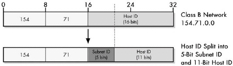

Linux系统编程:网络_基础部分
网络是多台计算机之间的互联互通形成的信息交互通道。现在的网络世界看似复杂，却遵从着一些基本设计原则。
拓扑
网络的结构是分层的，充分体现了分而自治的思想，每一层都通过接口与上下层相互通信，各层只管实现自己的功能，而不用关心其他层的具体实现。
五层的结果从上至下大致可以分成：应用层、传输层、网络层、链路层、物理层。
- 应用层 - 包括了具体我们使用的程序想要传输的内容。例如：HTTP、FTP等。
- 传输层 - 主要是 TCP 和 UDP 协议，在应用层数据的外层封装了一层，把 源端口和目的端口信息 加入了传输层。端口是用来区分本机上的不同的应用程序。两种协议可以使用相同的端口号，区分不同的程序通过 协议 + 端口 实现。
- 网络层 - 这一层会将 源和目的IP地址 加入，目的是为了区分不同的机器。
- 链路层 - 这一层会根据不同的链路层协议，如 固网、wifi、3G/4G/5G 等，进行封装。加上了 MAC地址信息。
- 物理层 - 在电缆、光纤或其他介质中传输数据。
路由器和交换机
路由器和交换机是网络组成的关键环节。
- 交换机 - 主要的工作是局域网内机器的MAC地址和交换机端口的映射。
- 路由器 - 则是链接不同 局域网 的桥梁。
路由的过程
例如上图中 PC1 要向 PC2 发送数据：
- PC1 先检测 PC2 的IP是否与它在同一局域网内。
- 如果在同一局域网内 - 在局域网内发送 ARP 请求，PC2 收到ARP后，回应 PC1，告诉 PC1 它的MAC地址。
- 如果不再同一局域网内 - 则 PC1 将数据包发送给默认网关，这里 源和目的IP地址不变，目的MAC地址为默认网关的MAC地址。
- 默认网关(R1)接收到PC1的数据后，解包，在自己的路由表中查找目的的IP地址是否存在。
- 如果目的IP地址存在，则从 R1的 ARP 缓存中 找到对应的MAC地址，将数据包发送给 R2。源MAC为R1的MAC，目的MAC为R2的MAC，IP地址不变。
- 如果 ARP 缓存中 没有：
- 则 R1 发送 ARP请求，R2收到ARP请求后，将自身的MAC地址告诉R1。
- R1更新ARP缓存。
- 将数据包发送给R2，源MAC为R1的MAC，目的MAC为R2的MAC，IP地址不变。
- 中间经过多个类似的过程后，到达R3。R3从路由表中查询PC2的MAC地址：
- 如果存在 - 直接将数据包发送给PC2，源MAC为R3的MAC，目的MAC为PC2的MAC，IP地址不变。
- 如果不存在 - 则发送 ARP请求，PC2 收到后，响应自身的MAC地址。R3 更新MAC映射，发送数据包给 PC2。
NAT和NAPT
上面的过程，网络层中的IP地址都为发生变化，这种情况是因为每台PC都有属于自己的公网IP地址。
可是在实际的过程，我们很难让每一台设备都能分配到一个公网的地址，因为IPv4地址的数量有限。(IPv6的出现就是为了解决这一问题)
这时，需要使用 NAT（Network Address Translation，网络地址转换） 的方式，将私网中的机器映射到公网路由上。
NAT主要解决了 IP地址有限，以及 路由扩展 的问题。通过NAT的方式，能够在不同的私网中使用相同的IP地址。
它的操作过程是，A网中的PC(192.168.2.2:23456) 向 服务器B(63.204.134.147:80) 发送请求时：
- 数据传输到 NAT 时，NAT将数据包解包，在自身的 IP地址池中选择未被使用的IP，用新的IP替换原来的源IP(网络层)，端口不变(传输层)。数据包的地址变为了 PC(203.0.113.1:23456) -> B(63.204.134.147:80)。
- 服务器B收到的数据包被认为是 NAT发过来的，后续服务器B只需要与此地址进行通信即可。
NAPT（Network Address Port Translation，网络地址端口转换） 和NAT的方式的不同在于，NAPT对源数据的端口进行了映射，NAPT可以使用一个IP地址与公网通信。
IP地址划分
我们现在所使用的IPv4的地址由三部分组成：网络ID、子网ID、主机ID。

如上图，网络ID为 16位，子网ID加上主机ID 也为16位。子网数越多，主机数越少，反之亦然。
在上面的例子中，PC如何知道目的IP是否是局域网IP的方法是，通过与 子网掩码 进行 与运算，然后对比自己的子网ID，如果一样，则被认为是在同一个子网内。
假设网络200.13.94.0，没有子网的话一共有254台主机(200.13.94.0、200.13.94.255不能算做主机)。划分子网时，按照以下方法：
- 1位用作子网ID，7位用作主机ID：那么子网数为2，第一个子网是0，第二个子网是1。每一个子网的主机数是 128 - 2 = 126。对应的子网掩码为 255.255.255.128。
- 2位用作子网ID，14位用作主机ID：那么子网数为4，四个子网0，1，2，3。每一个子网的主机数是 64 - 2 = 62。对应的子网掩码为 255.255.255.192。
TCP协议
TCP（Transmission Control Protocol，传输控制协议） 是一种面向连接的、可靠的、基于字节流的传输层通信协议。整个过程分为三个阶段：连接创建、数据传送、连接终止。
连接过程
连接创建 - 在 连接创建 阶段，主要过程是三次握手的过程。
- 第一步，发起端(一般为客户端发起)，向服务器发送
[SYN] Seq=x,Len=c。 - 第二步，服务器接收到客户端的请求，返回
[SYN, ACK] Seq=y,ACK=x+c,Len=s。ACKnum 表示已经收到客户端的 Seq为x 的数据包，期待下一次接收 序号为x+c 的数据包。 - 第三步，客户端发送
[ACK] Seq=x+c, ACK=y+s。表示接收到服务端发送的 序号为y+s 的数据包，目前发送的数据包 序号为x+c。(这也是数据传输的过程)
连接终止 - 在 连接终止 阶段，主要的过程是四次握手的过程，比创建时要多一次。
- 第一步，客户端(大多数情况下由客户端发起)，向服务器发送
[FIN] Seq=x。表示 客户端现在想结束通信了，目前包的序号为x。 - 第二步，服务器向客户端发送
[ACK] ACK=x+1，表示 服务器已经收到了客户端序号为x的数据包。 - 第三步，服务器向客户端发送
[FIN] Seq=y，表示 服务器现在可以结束通信了，目前包的序号为y。 - 第四步，客户端向服务器发送
[ACK] ACK=y+1，表示 客户端收到了服务器结束的信号，现在可以结束了。
PS: 上面的 SYN、ACK、FIN 都是通过设置不同的报文中的对应bit位实现的。
滑动窗口
在大多数情况下，一个数据包的内容不能一次传输到目的机器，需要将数据包进行分割，分成多个比较小的包进行传输。这样才不会对线路造成大的影响。

如上图所示，我们按照时间的不同可以将发送的数据包分为四个不同的时间段：
- 已发送并且已确认 - 表示对方已经收到了，并且返回了ACK信息。
- 已发送但并未确认 - 表示虽然已经发送了数据包，但是对方并未返回ACK信息。
- 未发送但接收方已经准备接收 - 表示即将发送给对方的数据包，接收方已经准备好缓存用来接收数据了。
- 未发送并且接收方并未准备接收 - 表示还不允许发送给接收方的数据包。
整个过程的关键是，接收方一次能容纳发送方发送多个个字节数。

如上面所示，接收方规定的窗口大小为20字节，发送方已经发送了 2类 的数据包，但未收到回应。如果超过一定的时间限制，接收端仍未回应，发送端将会发送 32-51段共20字节 的内容给接收端。
接收端方面，如果收到了 3类数据包，但 2类数据包 在传输过程中丢失了，那么接收端虽然收到了 3类数据包，但是 不能返回3类已收到的信号。因为如果发送了，则表示 3类之前包括3类的数据包 都已经接收到了。
等待接收端响应后，发送端的窗口往后挪，发送后面的数据。

上面的重传机制，需要将已经接收到的数据都再发送一次，假如有100个分片，其中1-99号都成功接收了，但是0号丢失了。那么，超过时延后，将会重新发送这100个分片，极大的造成了线路的拥挤。
可以选择只重传丢失的片段的方式，在数据包中添加 SACK 字段。
高级货
- 链路聚合 - 将多个物理网卡汇聚在一起，形成一个逻辑网卡，以实现出/入流量吞吐量在各物理网卡上的负载均衡。
(未完，慢慢补充)